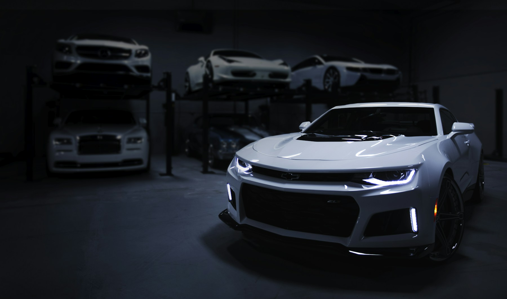
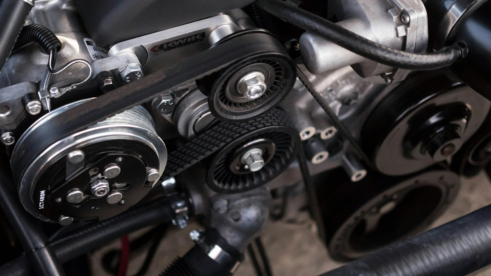
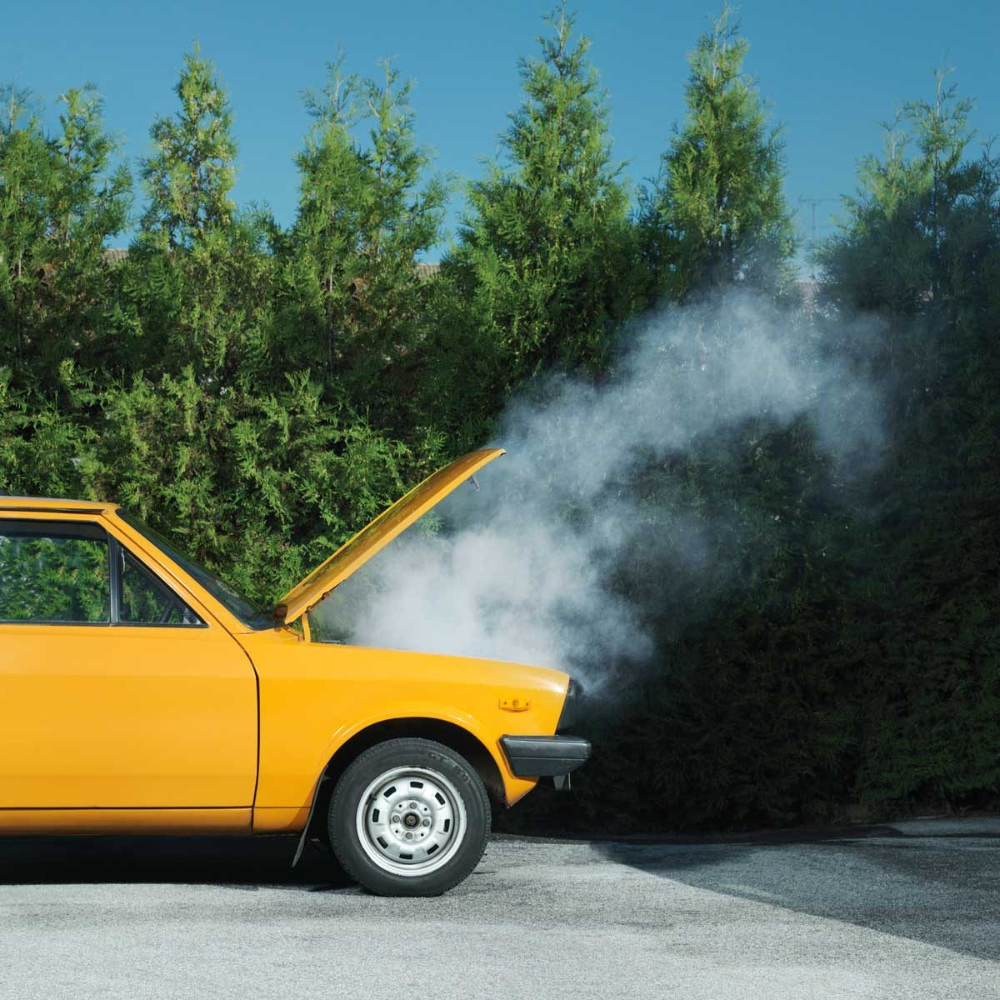
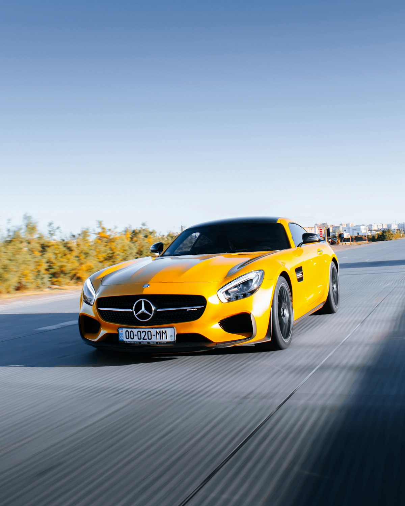

JURNAL AUTO / AVANGARD
Cunoștințe în plus.
Surprize în minus.
Ce merită să știi înainte de următoarea ta mașină. Ghiduri despre inspecție, kilometraj, caroserie și motor.

ÎNCEPE DE AICI
Ce verifici înainte să cumperi o mașină
Un ghid practic pentru anunț, istoric, caroserie, mecanică și interpretarea raportului de inspecție înainte de cumpărare.
Citește ghidul ↗6 articole afișate
GHID COMPLET
Ce verifici înainte să cumperi o mașină
Citește articolul ↗INSPECȚIE AUTO
Ce include o inspecție auto profesională
Citește articolul ↗
KILOMETRAJ
Kilometri dați înapoi: ce indicii merită verificate
Citește articolul ↗
CAROSERIE
Cum se verifică o caroserie reparată
Citește articolul ↗
MOTOR
Fum la eșapament: ce observi și ce verifici
Citește articolul ↗
ÎNTREȚINERE